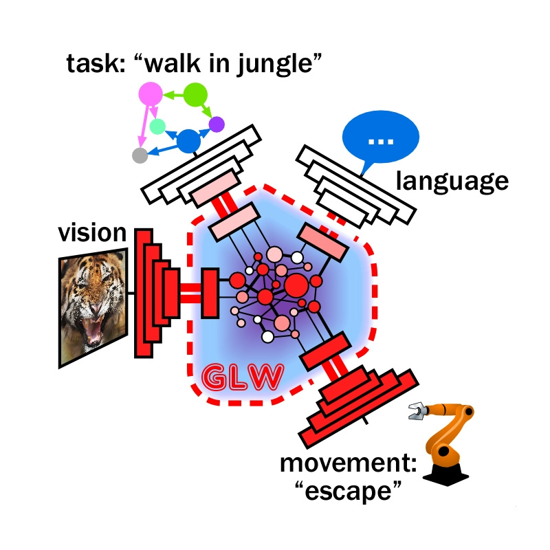

Rufin VanRullen
ERC Advanced GLoW
We are hiring!!!
- We are interested in competent and motivated post-doc and PhD candidates.
- Below are some details on the positions available in Fall 2023, but we will be continuing to hire on a rolling basis in the foreseeable future. Drop me an email if you're interested.
Multiple postdoctoral and PhD positions available!
ERC Advanced GLoW
The GLobal Latent Workspace: Towards AI models of flexible cognition
Recent advances in deep learning have allowed Artificial Intelligence (AI) to reach human-level performance in many sensory, perceptual, linguistic or cognitive tasks. There is a growing need, however, for novel, brain-inspired cognitive architectures to achieve more robust and flexible cognition. The Global Workspace Theory refers to a large-scale system integrating and distributing information among networks of specialized modules to create higher-level forms of cognition and awareness. It is one of the dominant neuroscientific accounts of higher-level brain function. We argue that the time is ripe to consider explicit implementations of this theory using deep learning techniques. We propose a roadmap based on unsupervised neural translation between multiple latent spaces (neural networks trained for distinct tasks, on distinct sensory inputs and/or modalities) to create a unique, amodal global latent workspace (GLW). Sensory inputs that are broadcast in this GLW acquire meaning by connecting them to (or translating them into) the relevant semantic knowledge and representations from language, memory or decision systems: the semantic grounding property. Conversely, language and semantic representations are grounded in the sensory environment via the same broadcast/translation operation. Finally, broadcasting sensory and semantic inputs to the relevant effector domains can create motor affordances and support embodied cognition. Together, the grounding and affordance properties infuse meaning in AI processes, which can then be combined sequentially (via attentional selection) to enable flexible cognitive functions—i.e., “System-2” AI. The interdisciplinary project will directly implement the GLW framework in deep learning models of growing complexity, and evaluate their correspondence with brain networks. It will provide an explicit evaluation of the Global Workspace Theory, and push the limits of current deep learning systems towards next-generation AI.